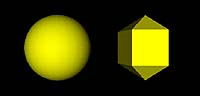

Shape {
appearance Appearance { material Material { } }
geometry MySphere { rad 2.5 numLat 30 numLng 30 }
}
This will create a gray sphere of radius 2.5 defined by 30 latitude and 30 longitude circles.
#VRML V2.0 utf8
#Eng 477 Illustration: Scripted Geometry - Use of Prototype MySphere
#K.-P. Beier, University of Michigan
#Last Update: October 24, 2002
############################################################################
# Declare Prototype MySphere (defined in external file "Proto_MySphere.wrl")
# (for more details see the comments in file "Proto_MySphere.wrl")
EXTERNPROTO MySphere [
field SFFloat rad # default: 1 # radius of sphere
field SFInt32 numLat # default: 4 # number of longitudes (parallel to equator)
field SFInt32 numLng # default: 4 # number of latitudes (passing through poles)
field SFFloat cra # default: 3.14 # crease angle
]
"Proto_MySphere.wrl"
############################################################################
# Sample Use of Prototype MySphere
NavigationInfo { type ["EXAMINE" "ANY"] }
Transform { translation -2 0 0 children [
Shape {
appearance Appearance { material Material { diffuseColor 1 1 0 } }
geometry MySphere {rad 1.5 numLat 25 numLng 25 cra 1}
}
]}
Transform { translation 2 0 0 children [
Shape {
appearance Appearance { material Material { diffuseColor 1 1 0 } }
geometry MySphere {rad 1.5 numLat 4 numLng 5 cra 0}
}
]} |
The above VRML file illustrates two different uses of MySphere:
|  |  Load VRML File |

{kind=link}
{kind=link}